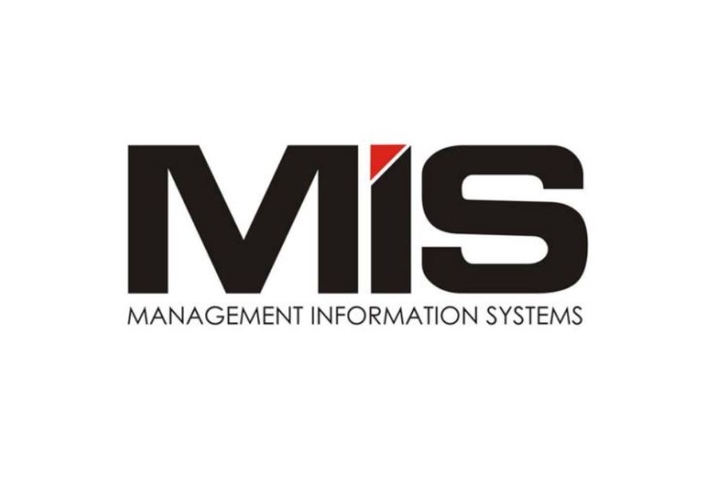

What is MIS?

MIS란?
경영 정보 시스템( Management Information Systems, MIS)은 기업이라는
시스템의 관점에서 경영시스템의 목표인 이익창출을 위해 다른 하위 시스템을
효율적으로 작용하도록 지원하는 시스템이다.
또한 자료를
저장하고, 정보를 생성함으로써 기업 내에서 필요한 지식을 생성하고 축적하며
이를 활용하도록 하는 통합적 컴퓨터 정보시스템이다. 눈에 보이지 않는
지식이지만 이러한 지식의 원천을 형성하는 자료와 정보를 제공하는 기능을
담당하는 것이 경영정보시스템이다.
개인은 생산성을 높이기 위해 워드, 한글, 엑셀, 파워포인트 등의 소프트웨어를
사용한다. 반면에 기업은 업무생산성을 높일 목적으로 여러 가지 정보시스템을
사용한다. 경영정보시스템은 기업의 경영관리에 필요한 정보를 신속히 수집
하고 종합적, 조직적으로 가공, 축적, 제공하여 기업의 생산성과 수익성을
높일 목적으로 구축된 다양한 정보시스템과 그 네트워크를 총칭하는 용어이다. 경영학의 세부 영역 중 하나로서 간단히 '조직에서 정보기술을 효율적이고 효과적으로 활용·관리하는 방법에 대한 지식체계'로 정의된다. 현재 경영정보시스템은 군사, 회계, 병원(의료), 환경, 기상, 자원, 전략, 지식, 범용, 통합, 종합 등 부분별로 다양하게 운영되고 있다.
MIS는 주로 다음과 같은 목적에서 도입된다.
1.운영 효율성 : 기업 운영의 효율성을 개선하여 생산성을 증대시킨다.
2.새로운 비즈니스 모델 : 새로운 상품, 서비스, 비즈니스 모델을
창출할 수 있다.
3.고객-공급자 친밀성 : 고객의 요구에 즉각적으로 반응할 수 있고,
잠재적 요구까지 분석해낼 수 있다.
4.의사결정 지원 : 정보부족으로 인해 단순 예측과 운에 의지하던
의사결정을 보다 확실하게 할 수 있도록 돕는다.
5.경쟁우위 : 더 싸고 더 좋고 더 빨리 대응할 수 있다.
6.생존 : 기업의 생존에 필수적인 요소가 되기도 한다.